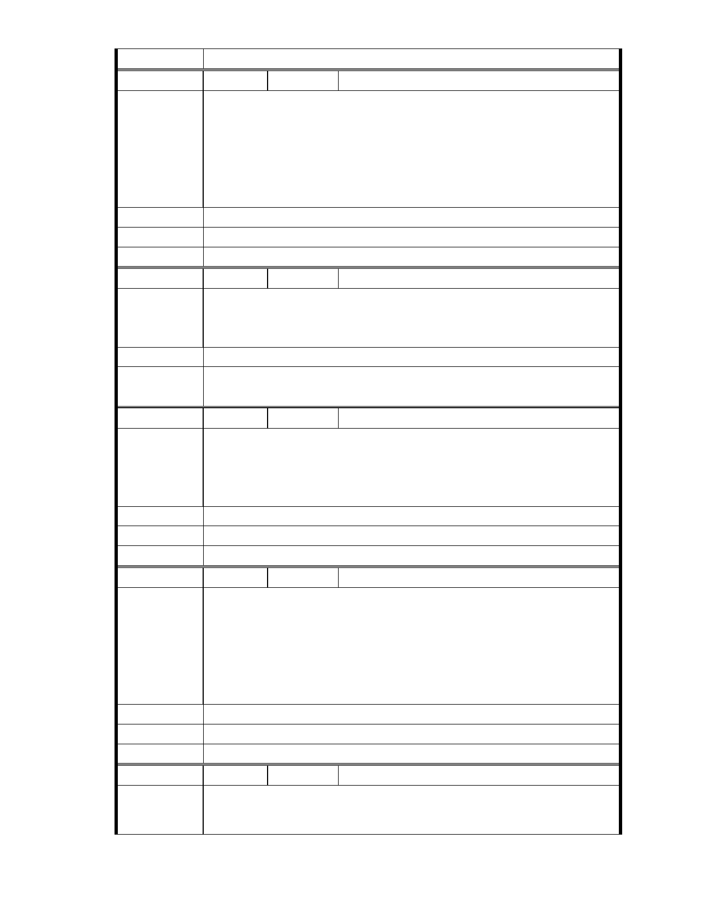

委 員 會 決 議 同編號 1。
編 號 227 陳情人 陳薌芹
慈濟內湖園區它不需列為保護區，因為以慈濟的專業，加上市府的監督，
它的改變將不會破壞周遭環境的，它的興建是正面的，它具有帶動社區
陳 情 理 由 善與愛的能量。 慈濟是服務社會與人類的公益團體，它是正面與受到肯
定的，在此呼籲市府能讓這案子順利通過，如此將受益更多的里民與促
進社區善與愛的循環。
建議辦法
市 府 說 明 相關陳情意見將納入本案審查人民意見，依法定程序辦理。
委 員 會 決 議 同編號 1。
編 號 228 陳情人 陳麗容
我贊成慈濟內湖園區改善工程. 我相信慈濟證嚴法師愛護台灣這塊土地
陳 情 理 由 的理念.他 21 年前就呼籲作環保,台灣目前才少蓋幾座焚化爐.
建議辦法
市 府 說 明 相關陳情意見將納入本案審查人民意見，依法定程序辦理。
委 員 會 決 議 同編號 1。
編 號 229 陳情人 徐翠苓
慈濟做的任何事，一定會考量對人類對地球對環境是否有幫助，這樣做
陳 情 理 由 是否是最好?懇請貴當局撥冗來了解慈濟，以您的智慧來審核此開發案。
無限感恩
建議辦法
市 府 說 明 相關陳情意見將納入本案審查人民意見，依法定程序辦理。
委 員 會 決 議 同編號 1。
編 號 230 陳情人 閻慧民
陳情理由
慈濟正確的環保 理念－－以人為本，以自然為師。慈濟的環保，絕對不
走偏激抗議的路線，要走落實人間菩薩道的路線。這就是為何內湖這個
慈濟的環保 模範生，要再更進一步的示範何謂「人與環保共生息」；也
讓慈濟內湖園區透過這次的改善計畫推動，真的成為「內湖的綠手指」，
所以讓這個延宕十餘年之久的案子請盡速通過。
建議辦法
市 府 說 明 相關陳情意見將納入本案審查人民意見，依法定程序辦理。
委 員 會 決 議 同編號 1。
編 號 231 陳情人 曾國豐
陳 情 理 由 對於那些環團說謊造謠的地方太多： 1. 內湖園區是不是湖？依據北市府
的說明會的資料，已經確認，當地「從來就不是湖的一部分」，而是田地。
- 279 -